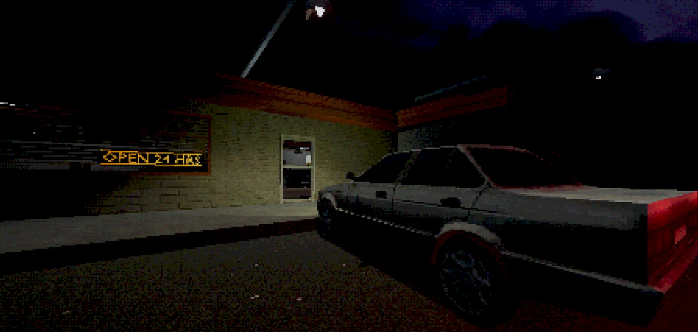
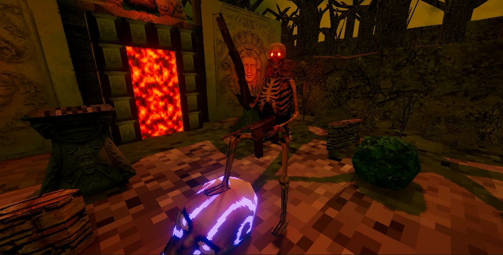
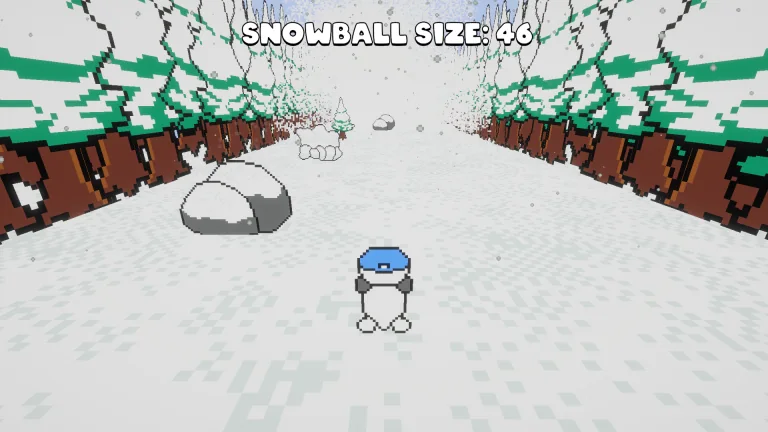

Games built
with intent.
I’m Nick Johnson, a game designer and developer focused on gameplay systems, programming, level design, prototyping, and creating memorable player experiences.
Featured
Hollowgrave is the current flagship project and a place to bring together lessons from years of prototypes, releases, game jams, and experimentation.
Hollowgrave
A dark dungeon crawler exploring death, decay, strange creatures, fast movement, and a world that feels like it should have died long ago.
Explore project →Built, tested, shipped.
From solo releases to collaborative game jams, these projects show how my design and programming work has evolved.

Lakefront Restaurant
An experimental horror game built around randomized events and environmental interaction.
View case study →
Riverwood
My first publicly released game: a retro first-person shooter set inside a cursed castle.
View case study →
Hollowborn
A larger Quake-inspired project that taught me some of the hardest lessons about scope and systems.
View case study →Splash Ball
A local multiplayer water-balloon party game built rapidly with the Game Design Club.
View case study →
Penguin Game
An infinite runner made for a children's holiday event under a tight development deadline.
View case study →Game Design Internship
Accessible, physics-based educational experiences developed with faculty and real-world feedback.
View experience →Design is more than just an idea for me.
I like taking an idea from rough prototype to something playable, then learning from the player. That means building systems, testing them, cutting what does not work, and refining what does.
More about me →Have a project in mind?
The portfolio is still growing. For now, the best place to find my code and current work is GitHub.